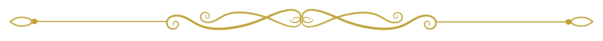

Menu
Plats
Apéritifs
Velouté de topinambour à la truffe noire
Croustillant de foie gras et chutney de figues
Huître fine de claire, granité au yuzu Entrées
Saint-Jacques snackées, purée de panais vanillée
Œuf parfait, crémeux de champignons, éclats de noisette
Carpaccio de betterave, chèvre frais et gel de framboise
Plats
Filet de bœuf maturé, jus corsé et mousseline de céleri
Suprême de volaille fermière, morilles et émulsion au vin jaune
Turbot rôti, mousseline de carotte safranée et écume de crustacés
Desserts
Sphère chocolatée, cœur coulant praliné et glace vanille
Tartelette citron-basilic meringuée
Soufflé chaud au Grand Marnier, crème glacée à la fève tonka
Boissons
Cocktails et créations maisons
Clair de Lune – Gin, liqueur de fleur de sureau, citron et lavande
Éclipse – Vodka infusée au basilic, jus de mûre et mousse de citron
Golden Hour – Rhum ambré, orange sanguine, sirop d’érable
Vins et spiritueux
Chablis 1er cru – Bourgogne
Meursault – Vin blanc sec & beurré
Crozes-Hermitage rouge – Vallée du Rhône
Porto vintage
Boissons sans alcools
Jus de pomme artisanal pressé à froid
Café arabica grand cru, torréfié localement
Matcha latte onctueux
Limonade maison au romarin